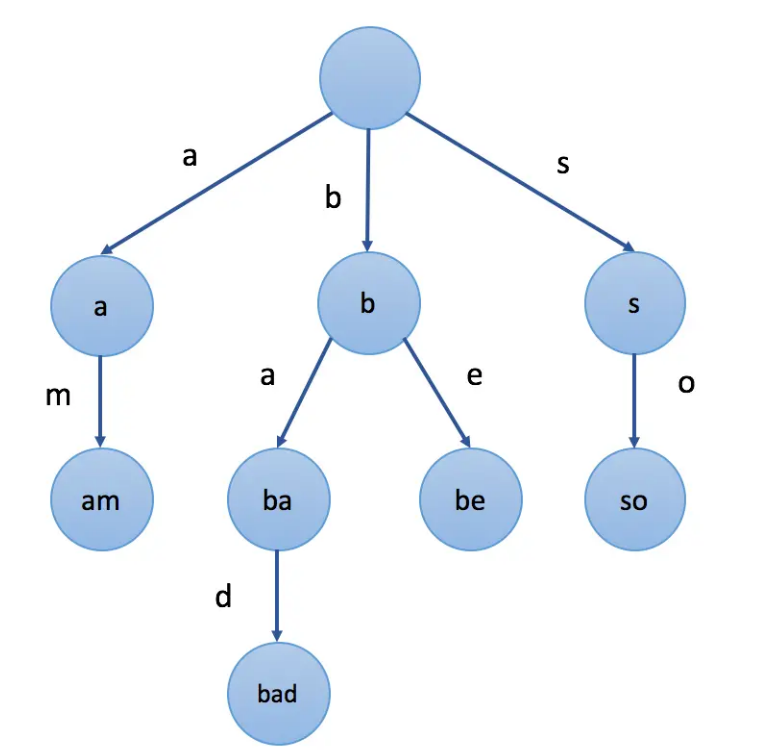

数据结构和算法-前缀树
Table of Contents
前缀树（字典树）
什么是前缀树
前缀树是N叉树的一种特殊形式。通常来说，一个前缀树是用来存储字符串的。前缀树的每一个节点代表一个字符串（前缀）。每一个节点会有多个子节点，通往不同子节点的路径上有着不同的字符。子节点代表的字符串是由节点本身的原始字符串，以及通往该子节点路径上所有的字符组成的。
前缀树的优点概括起来就是：一次建树，永久使用
前缀树插入和查询的时间复杂度都是O(n)，n是对应单词的长度
下面是前缀树的一个例子：
 由am,bad,be,so构成的前缀树
前缀树的创建
前缀树类的创建模板如下：
class Trie {
private:
bool isEnd;
Trie* next[26];
public:
//构造函数
Trie() {
isEnd = false;
for (int i = 0; i < 26; ++i) {
next[i] = nullptr;
}
}
//插入函数
void insert(string word) {
Trie* node = this;
for (char c : word) {
if (node->next[c - 'a'] == nullptr) {
node->next[c - 'a'] = new Trie();
}
node = node->next[c - 'a'];
}
node->isEnd = true;
}
//搜索函数
bool search(string word) {
Trie* node = this;
for (char c : word) {
if (node->next[c - 'a'] == nullptr) {
return false;
}
node = node->next[c - 'a'];
}
return node->isEnd;
}
//前缀匹配函数，如果之前已经插入的字符串 word 的前缀之一为 prefix ，返回 true ；否则，返回 false
bool startsWith(string prefix) {
Trie* node = this;
for (char c : prefix) {
if (node->next[c - 'a'] == nullptr) {
return false;
}
node = node->next[c - 'a'];
}
return true;
}
};